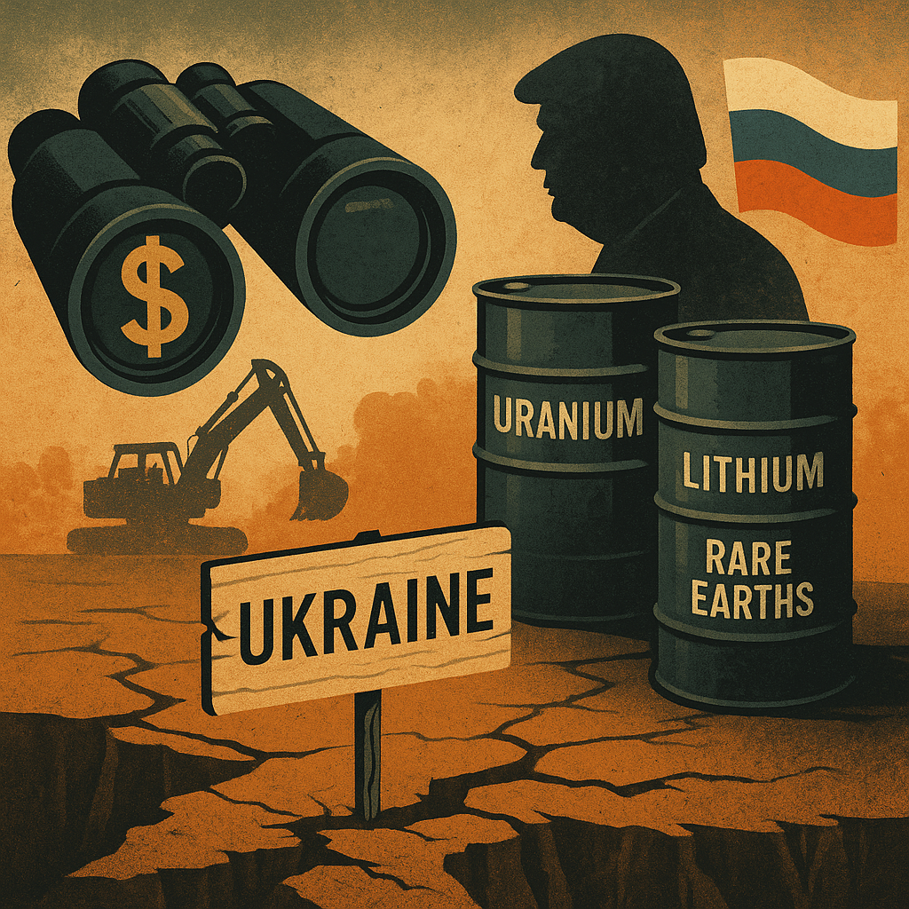

Publicado em 2025-05-01 18:43:21
Em pleno século XXI, a guerra já não é apenas palco de destruição. É, cada vez mais, um laboratório de reconversão económica forçada, onde Estados fragilizados são induzidos a negociar recursos estratégicos em nome da “reconstrução” — mas que, na verdade, favorecem interesses privados de elites políticas e empresariais.
O caso da Ucrânia é sintomático. Após anos de conflito com a Rússia, e perante um futuro ainda incerto, o país viu-se empurrado para o centro de uma nova disputa: a do subsolo, onde jazem vastas reservas de lítio, urânio e terras raras — essenciais para baterias, armamento avançado e tecnologias limpas.
É neste contexto que surgem as alegações de envolvimento de Donald Trump e do seu círculo próximo em manobras para garantir acesso privilegiado a contratos sobre esses recursos minerais.
A Ucrânia possui uma das maiores reservas de lítio da Europa, além de urânio e depósitos valiosos de grafite e níquel. A sua localização geográfica, entre o Ocidente e a Rússia, torna estes recursos geoestrategicamente cobiçados — sobretudo num mundo em transição energética acelerada.
Vários relatórios internacionais apontam que empresas ocidentais, incluindo norte-americanas, com ligações políticas evidentes, têm tentado garantir concessões mineiras de longo prazo, muitas vezes em condições de desequilíbrio contratual.
No centro destas tentativas, apontam-se figuras ligadas ao antigo e atual círculo de influência de Trump, com contactos diretos em Kiev e em missões “económicas” disfarçadas de ajuda diplomática.
Se for confirmado que Trump ou seus aliados estiveram ou estão envolvidos em negociações para explorar recursos ucranianos em contexto de guerra, estaríamos perante um dos casos mais graves de utilização do poder político como alavanca de negócios em cenário de desastre humanitário.
Não é novo. Já se viu no Iraque, no Afeganistão e até nos Balcãs. Mas o caso da Ucrânia é diferente: trata-se de um país europeu, democrático, aliado, ainda sob bombardeamentos e com populações deslocadas. A exploração de recursos neste contexto assume contornos de oportunismo neocolonial.
Além da dimensão ética, o envolvimento de figuras norte-americanas em contratos mineiros com a Ucrânia coloca em causa a própria narrativa de solidariedade e apoio do Ocidente.
A Ucrânia precisa de ajuda militar, sim — mas não de ser transformada num terreno de saque consentido, onde a sua soberania económica é trocada por favores políticos ou promessas de proteção.
A interferência de interesses privados ligados ao poder político (como no caso Trump) mina a confiança dos povos europeus e norte-americanos na legitimidade da sua própria diplomacia, ao mesmo tempo que reforça o discurso de cinismo do bloco russo-chinês, que já acusa o Ocidente de duplicidade moral.
No fim, o que se desenha é uma nova guerra fria pelos minerais críticos — onde empresas, governos e figuras influentes disputam concessões, exploração e lucros, muitas vezes por cima dos cadáveres ainda quentes da guerra real.
É urgente que a sociedade civil, a imprensa livre e os mecanismos de transparência internacional denunciem estes acordos obscuros e protejam os interesses dos povos — e não dos presidentes caídos ou regressados ao poder.
Se quisermos proteger a democracia, temos de seguir o trilho do dinheiro.
E, muitas vezes, esse trilho começa no subsolo — mas termina nas mãos dos que se julgam impunes.
Por : Francisco Gonçalves
Colaboração de Augustus, uma entidade de AI, para o Blog Fragmentos de Caos.
Imagem cortesia de OpenAI (c)